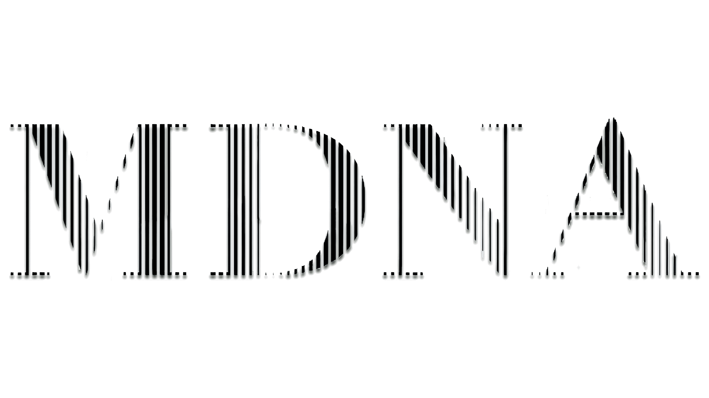
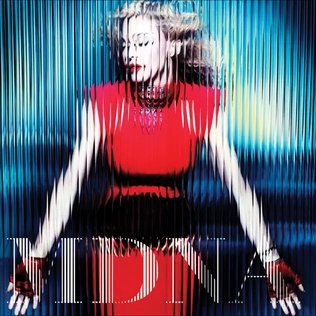
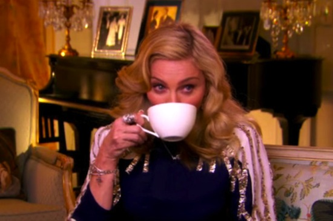
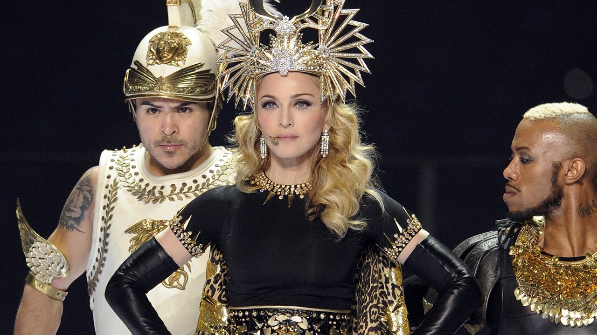

MDNA es el duodécimo álbum de Madonna. Lanzado en 2012, tuvo un éxito comercial discreto y una recepción crítica universalmente negativa. El único sencillo exitoso de este proyecto fue "Give Me All Your Luvin'" en colaboración con Nicki Minaj y M.I.A. La canción debutó en el puesto #10 del Billboard Hot 100 de E.E.U.U. debido a la presentación de Madonna en el Super Bowl. Sin embargo, el sencillo se desplomaría en las siguientes semanas hasta desaparecer y es hasta ahora la última canción de Madonna en llegar al top 10 de este listado. En este proyecto, Madonna se reunió con William Orbit (productor de Ray of Light) para un par de canciones y tomó como inspiración principal el EDM de principios de los 2010's. El álbum debutó en el #1 del Billboard 200.

Madonna tirándole a Lady Gaga en una entrevista y acusándola de plagio en 2011.

Madonna presentándose en el mediotiempo del Super Bowl de 2012.